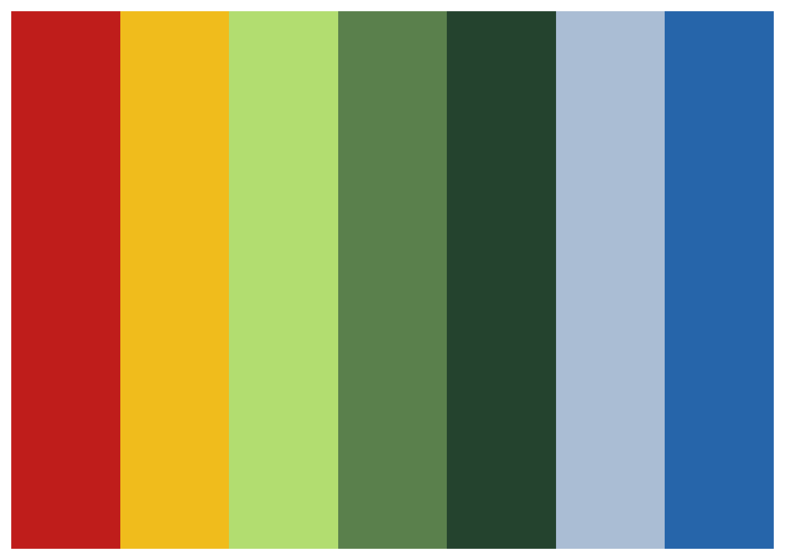
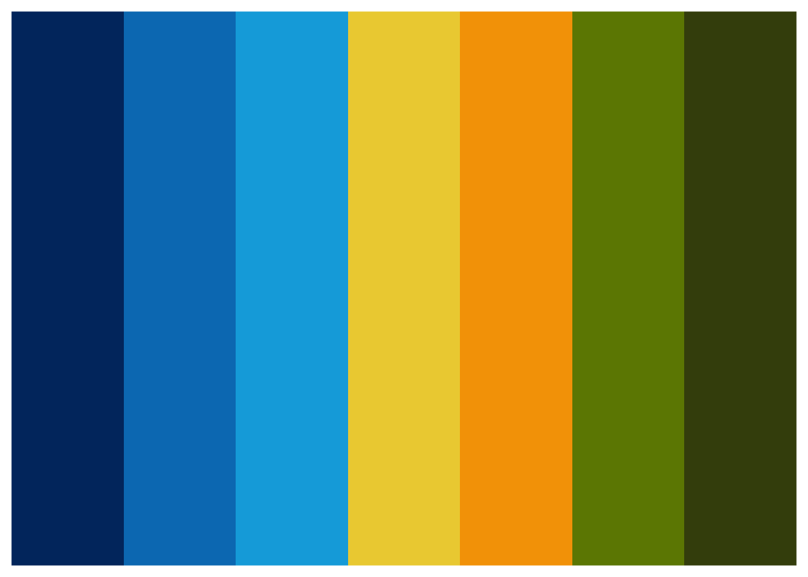

feather
There are so many lovely packages for colour palettes. This new one called `feather`` is inspired by Australian birds and is delightful. The vignette doesn’t have any pictures of the birds though, so I thought I mihgt find some and try out a pull request!
library(feather)names(feather_palettes)## [1] "pardalote" "plains_wanderer"
## [3] "bee_eater" "rose_crowned_fruit_dove"
## [5] "eastern_rosella"Eastern Rosella
knitr::include_graphics("https://commons.wikimedia.org/wiki/File:Platycercus_eximius_diemenensis_male.jpg#/media/File:Platycercus_eximius_diemenensis_male.jpg")
By <a href=“//commons.wikimedia.org/wiki/User:JJ_Harrison” title=“User:JJ Harrison”>JJ Harrison</a> (<a rel=“nofollow” class=“external free” href=“https://www.jjharrison.com.au/">https://www.jjharrison.com.au/</a>;) - <span class=”int-own-work" lang=“en”>Own work</span>, CC BY-SA 3.0, Link
er <- get_pal("eastern_rosella")
print_pal(er)
Plains wanderer
pw <- get_pal("plains_wanderer")
print_pal(pw)Pardalote
p <- get_pal("pardalote")
print_pal(p)Rose crowned fruit dove
rcfd <- get_pal("rose_crowned_fruit_dove")
print_pal(rcfd)Bee eater
be<- get_pal("bee_eater")
print_pal(be)